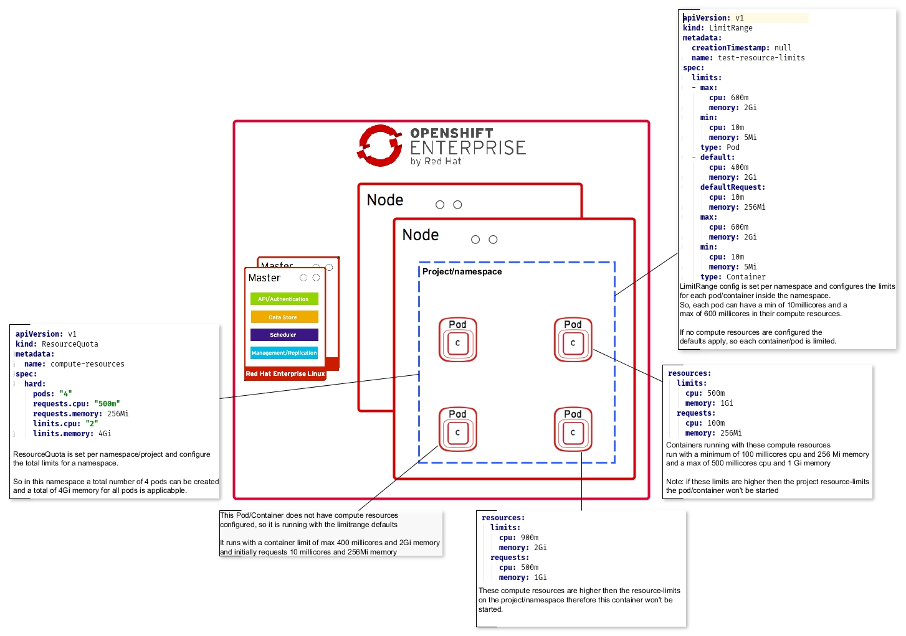

Openshift limits explained
Openshift is a Paas platform offered by Red Hat based mainly on Docker and Kubernetes. One of the concepts behind it is that Ops can set boundaries for Dev. For example by providing a list of supported technologies in the form of base images. One other way Ops can further control the Paas cluster is to impose various limits on the components running in Openshift.
However, Openshift currently has three different ways of setting restrictions on different levels which do interconnect in an implicit way. Which sometimes can become difficult to setup in a proper way and people end up with Pods never leaving the “Pending” state. So in this blogpost we are going to take look at the different limits or restrictions available in Openshift and how they influence each other.
But to understand the restrictions better it is good to know some basic Openshift concepts and components on which these limits act. Although I highly recommend to start experimenting with restrictions and limits after you become familiar with Openshift.
Below are the components of Openshift influenced by the restrictions. (source: https://docs.openshift.com/enterprise/3.0/architecture/core_concepts/index.html)
Containers
The basic units of OpenShift applications are called containers. Linux container technologies are lightweight mechanisms for isolating running processes so that they are limited to interacting with only their designated resources. Many application instances can be running in containers on a single host without visibility into each others’ processes, files, network, and so on. Typically, each container provides a single service (often called a “micro-service”), such as a web server or a database, though containers can be used for arbitrary workloads.
The Linux kernel has been incorporating capabilities for container technologies for years. More recently the Docker project has developed a convenient management interface for Linux containers on a host. OpenShift and Kubernetes add the ability to orchestrate Docker containers across multi-host installations.
Pods
OpenShift leverages the Kubernetes concept of a pod, which is one or more containers deployed together on one host, and the smallest compute unit that can be defined, deployed, and managed.
Namespaces
A Kubernetes namespace provides a mechanism to scope resources in a cluster. In OpenShift, a project is a Kubernetes namespace with additional annotations.
Namespaces provide a unique scope for:
- Named resources to avoid basic naming collisions.
- Delegated management authority to trusted users.
- The ability to limit community resource consumption.
Most objects in the system are scoped by namespace, but some are excepted and have no namespace, including nodes and users.
The Kubernetes documentation has more information on namespaces.
Openshift limits and restrictions
There are three different types of limits and restrictions available in Openshift.
- Quotas
- Limit ranges
- Compute resources
Quotas
Quotas are boundaries configured per namespace and act as a upper limit for resources in that particular namespace. It essentially defines the capacity of the namespace. How this capacity is used is up to the user using the namespace. For example if the total capacity us used by one or one hundred pods is not dictated by the quota, except when a max number of pods is configured.
Like most things in Openshift you can configure a quota with a yaml configuration. One basic configuration for a quota looks like:
apiVersion: v1
kind: ResourceQuota
metadata:
name: namespace-quota
spec:
hard:
pods: "5"
requests.cpu: "500m"
requests.memory: 512Mi
limits.cpu: "2"
limits.memory: 2Gi
This quota says that the namespace can have a maximum of 5 pods, and/or a max of 2 cores and 2 Gb of memory, the initial “claim” of this namespace is 500 millicores and 512 Mb of memory.
Now it is important to note that by default these limits are imposed to “NonTerminating” pods only. Meaning that for example build pods which terminate eventually are not counted in this quota.
Explicitly this can be configured by adding a scope to the yaml spec:
apiVersion: v1
kind: ResourceQuota
metadata:
name: namespace-quota
spec:
hard:
pods: "5"
requests.cpu: "500m"
requests.memory: 512Mi
limits.cpu: "2"
limits.memory: 2Gi
scopes:
- NotTerminating
There are also other scopes available, like Best effort and guaranteed.
Limit ranges
One other type of limit is the “limit range”. A limit range is also configured on a namespace, however a limit range defines limits per pod and/or container in that namespace. It essentially provides CPU and memory limits for containers and pods.
Again, configuring a limit range is also done by a yaml configuration:
apiVersion: "v1"
kind: "LimitRange"
metadata:
name: "resource-limits"
spec:
limits:
-
type: "Pod"
max:
cpu: "2"
memory: "1Gi"
min:
cpu: "200m"
memory: "6Mi"
-
type: "Container"
max:
cpu: "2"
memory: "1Gi"
min:
cpu: "100m"
memory: "4Mi"
default:
cpu: "300m"
memory: "200Mi"
defaultRequest:
cpu: "200m"
memory: "100Mi
Here we can see both Pod and Container limits. These limits define the “range” (hence the term limit range) for each container of pod in the namespace. So in the above example each Pod in the namespace will initially claim 200 millicores and 6Mb of memory and can run with a max of 1 GB of memory and 2 cores of CPU. The actual limits the Pod or container runs with can be defined in the Pod or Container spec which we will discover below. However the limit range defines the range of these limits.
Another thing to note is the default and defaultRequest limits in the Container limit range. These are the limits applied to a container who do not specify further limits and hence get assigned the default.
Compute resources
The last of the limits is probably the easiest to understand, compute resources are defined on the Pod or the Container spec, in for example the deploymentconfig or the replication controller. And define the CPI and Memory limits for that particular pod.
Lets look at an example Yaml:
apiVersion: v1
kind: Pod
spec:
containers:
- image: nginx
name: nginx
resources:
requests:
cpu: 100m
memory: 200Mi
limits:
cpu: 200m
memory: 400Mi
In the above spec the Pod will initially claim 100 millicores and 200 Mb of memory and will max out at 200 millicores and 400 Mb of memory. Note whenever a Limit range is also provided in the namespace where the above Pod runs and the compute resources limits here are within the limit range the Pod will run fine. If however the limits are above the limits in the limit range the pod will not start.
Scopes
All limits have a request and a max which define further ranges the Pod can operate on. Where the request is by all intense and purposes “guaranteed” (as long as the underlying node has the capacity). This gives the option to implicitly set different QoS tiers.
- BestEffort – no limits are provided whatsoever. The Pod claims whatever it needs, but is the first one to get scaled down or killed when other Pods request for resources.
- Burstable – The request limits are lower than the max limits. The initial limit is guaranteed, but the Pod can, if resources are available, burst to its maximum.
- Guaranteed – the request and max are identical, so it directly claims the max resources, even though the pod might not initially use all resources they are already claimed by the cluster, and therefore guaranteed.
Below is an overall view of the three different Openshift limits.
